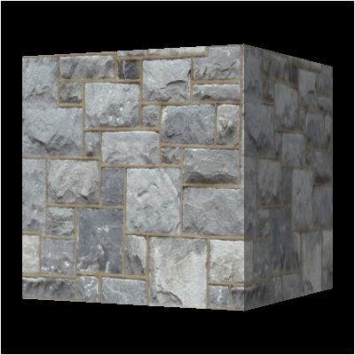
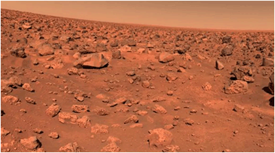
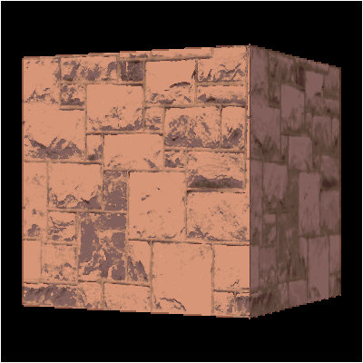
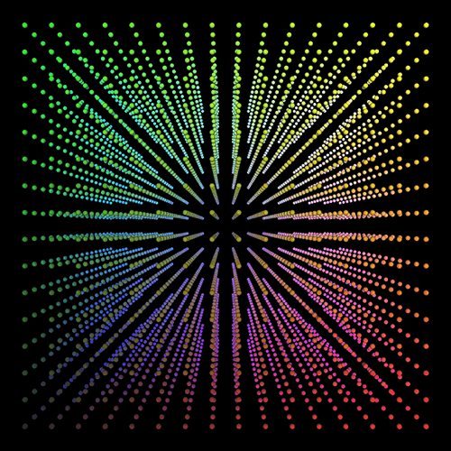
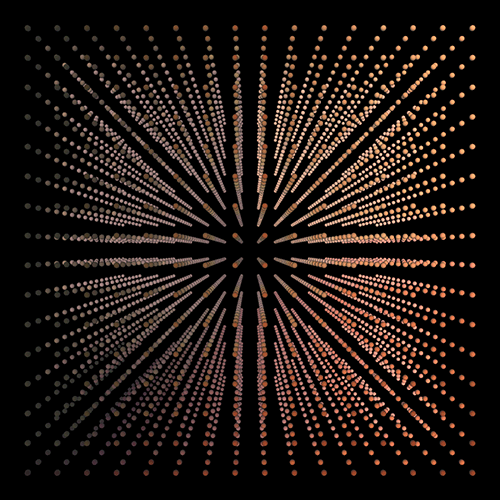
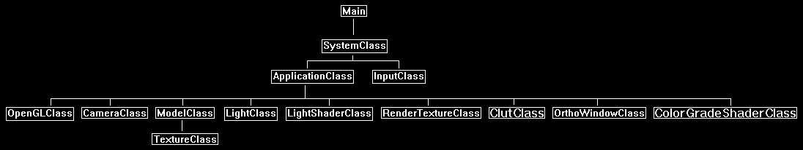

In this tutorial we will cover how to implement a real time color grading shader using OpenGL 4.0, C++, and GLSL.
Often you will see graphics engines tint the rendering output by a single color or a color gradient to achieve a specific color look.
However, there are certain cases where we want even more detailed control per pixel and per color.
This is where color grading comes in handy.
Color grading is the ability to control the rendering of a final image by limiting the output colors to a specific, smaller color palette.
Most people will already be familiar with this through the use of color correction tools in GIMP or Photoshop.
Those tools operate on pre-made color tables to perform color correction.
These tables are often called LUTs.
In this tutorial we will detail how to perform this same type of color grading in real time using 2D post processing and 3D textures in OpenGL 4.0.
To understand the steps involved lets first start with our regular rotating cube scene:

Say we want to color grade it with colors that are common on the planet Mars, such as the following picture:

We will need to use a shader that limits the output colors to just the ones available in that picture of Mars.
So, when we have a color from the original image we will need to find the nearest match from the Mars picture, and output that Mars color instead of the original.
This will then give us a color graded output such as follows:

To perform this type of color grading we must first start by creating a list of all the unique colors in the Mars picture.
This is easily done by reading in the image as an array, and then making a smaller subset array with all the unique RGB colors we find in the image.
This will be our unique color list.
Note also that instead of using an image you could just make a TGA file and plot all the exact color pixels you want into it.
Or even combine both methods and use and image and then plot some extra color pixels into the corner.
Now that we have an array of unique RGB colors we will move onto the second step which will be to convert the unique color list array into a color lookup table.
This color lookup table needs to be indexable and shader useable.
To meet those two requirements, we will need to create a 3D texture.
This 3D texture will give us the ability to quickly index into it and treat it as a lookup table.
We will use the RGB source colors of the render texture that we are trying to color grade as the indexes into the 3D texture.
To create the 3D texture that we can index into we will start by first creating a 3D cube that uses RGB colors as its indexes.
So red will be the X axis (width) going from left at 0 to the right at 255.
The green color will be the Y axis (height) going from bottom at 0 to the top at 255.
The blue color will be the Z axis (depth) going from near at 0 to far at 255.
To visualize this 8-bit color RGB cube it will look like the following:

Note that since we are color grading, which generally means subtracting colors, we can go with a reduced precision cube.
For example, a 16x16x16 or 32x32x32 cube will give very good results instead of a 256x256x256 cube.
Any colors missing will just be interpolated between in our shader.
This will reduce the memory required for a 48MB 3D texture down to 12KB for nearly the same color graded image quality.
Of course, we should still make our cube size a variable that we can modify easily to test the different qualities.
Now that we have our regular RGB cube we can move onto the third step.
In this step we will go through all the RGB colors in the 3D cube and find the closest color to the RGB color from the unique color list that contains our Mars colors.
So, for each regular RGB color we scan through the entire unique color list array and subtract the colors from each other.
The lowest resulting color value will be the closest color.
We then use that closest unique color to replace the original RGB color in the cube.
Once we are done going through the entire cube, we should now have a new cube that looks like the following:

This cube will now be used as the color lookup table to replace RGB colors from the original rendered scene to create our color graded output scene.
With the completed cube we can move onto the fourth step and write it out as an unsigned char buffer in RGB pairs.
The order is important, so we write it first along the red X axis, then green Y axis, then blue Z axis from bottom to top order.
This way it can be read in directly as an OpenGL 3D texture without having to do any modifications to the order.
The fifth step is to create a 3D texture in our engine from the file containing the buffer with our unique color cube.
We use the glTexImage3D function to create a texture the same as any other texture.
The only difference is we now have a depth value and call most of the same functions with GL_TEXTURE_3D instead of GL_TEXTURE_2D.
The sixth and final step is to render our regular scene out to a texture and perform 2D post processing on it with our color grading shader.
The color grading shader will take the render texture as one shader texture input, and the 3D color lookup table as the other shader texture input.
Then we can use the RGB color of the source render texture as the index into the 3D texture to get our replacement color and do our color grading.
This will be done with a single line of GLSL code:
replacementColor = texture(clutTexture, textureColor.rgb);
This indexing method is extremely fast, and we will now have very precise color grading.
Finally, do note that instead of replacing the color there are other operations you could perform.
For example, you could do a linear interpolation to blend the image and the unique color together.
You could also use multiple color look up tables as multiple 3D texture inputs into the shader.
However, in this tutorial we will just cover the basic replacement technique.
Framework
The framework will have two new classes. The ClutClass will contain the 3D texture that gets built from the unique color data.
And the ColorGradeShaderClass will encapsulate the color grading shader.

For this tutorial I have separated out the code for producing a unique color list from a targa image.
It will just be a main.cpp single source file that you can compile and run, and it does the processing work and outputs a file.
You should generally pre-process your color lookup tables since it can take more than a couple seconds to do so at run time.
Also, you may be processing very large images to generate your unique color lists, and storing those images is a waste of space when the resulting unique color list is only a couple of kilobytes in size.
main.cpp
The following is a small stand-alone program that will process an image and output a unique color list array that can be read in as a 3D texture in OpenGL.
////////////////////////////////////////////////////////////////////////////////
// Filename: main.cpp
////////////////////////////////////////////////////////////////////////////////
//////////////
// INCLUDES //
//////////////
#include <stdio.h>
#include <string.h>
#include <iostream>
using namespace std;
/////////////
// STRUCTS //
/////////////
struct TargaHeader
{
unsigned char data1[12];
unsigned short width;
unsigned short height;
unsigned char bpp;
unsigned char data2;
};
struct ColorArrayType
{
int red, green, blue;
};
///////////////
// FUNCTIONS //
///////////////
bool GetTargaDimensions(char*, int&, int&);
bool ReadTargaData(char*, unsigned char*, unsigned long);
void FindUniqueColors(unsigned char*, unsigned char*, int, int, int&);
void FindMatch(int, int, int, ColorArrayType*, int, int&, int&, int&);
bool WriteClutData(unsigned char*, int);
//////////////////
// MAIN PROGRAM //
//////////////////
int main()
{
char filename[256];
unsigned char *targaData, *colorList;
unsigned long imageSize;
int cubeSize, height, width, arraySize;
bool result;
unsigned char *outputArray;
ColorArrayType* colorArray;
int i, j, k, index, cubeRed, cubeGreen, cubeBlue, outRed, outGreen, outBlue;
The first part of the program will set the config for the file we are reading as well as the size of the cube.
After that it will read in the dimensions of the targa image from the targa file.
// Set the size of the cube and the image file name.
cubeSize = 16;
strcpy(filename, "../Engine/data/colors003.tga");
// Get the dimensions of the TGA image.
result = GetTargaDimensions(filename, width, height);
if(!result)
{
return -1;
}
Once we have our dimensions, we will create a buffer and read the targa file into it.
// Calculate the size of the 24 bit image data.
imageSize = width * height * 3;
// Allocate memory for the targa image data.
targaData = new unsigned char[imageSize];
// Read in the TGA file into the targaData array.
result = ReadTargaData(filename, targaData, imageSize);
if(!result)
{
return -1;
}
Next, we will create a color list and call the FindUniqueColors function to scan the targa image and store all of the unique colors from it into the color list.
// Create the list to store the unique colors in.
colorList = new unsigned char[imageSize];
// Find all the unique colors in the targa data and store them in the color list. Get populated color list and array size back.
FindUniqueColors(targaData, colorList, width, height, arraySize);
// Release the targa image data now that it was copied into the color list.
delete [] targaData;
targaData = 0;
The next step will be to create another array where we can copy the unsigned char unique colors into an integer format array so that we can do quicker math with the colors.
// Create another array and copy all the unique colors from the color list into it and convert them to integers.
colorArray = new ColorArrayType[arraySize];
for(i=0; i<arraySize; i++)
{
colorArray[i].red = (int)colorList[(i*3)];
colorArray[i].green = (int)colorList[(i*3) + 1];
colorArray[i].blue = (int)colorList[(i*3) + 2];
}
// Release the color list now that we have the unique colors in integer format.
delete [] colorList;
colorList = 0;
Here is where we create our 3D cube. We create an output array that will store the 3D cube.
Then we loop through all possible RGB colors (based on the size of the cube) and find their closest match from the unique color list.
cout << "Creating cube." << endl;
// Create the output array for the 3D texture that we will store the final color lookup table data.
outputArray = new unsigned char[cubeSize * cubeSize * cubeSize * 3];
// Create the 3D texture cube by going through all RGB colors based on the cube size, and find the closest color from the CLUT data.
index = 0;
for(k=0; k<cubeSize; k++)
{
for(j=0; j<cubeSize; j++)
{
for(i=0; i<cubeSize; i++)
{
cubeRed = (int)(((float)i / (float)(cubeSize-1)) * 255.0f);
cubeGreen = (int)(((float)j / (float)(cubeSize-1)) * 255.0f);
cubeBlue = (int)(((float)k / (float)(cubeSize-1)) * 255.0f);
FindMatch(cubeRed, cubeGreen, cubeBlue, colorArray, arraySize, outRed, outGreen, outBlue);
outputArray[index] = (unsigned char)outRed;
outputArray[index+1] = (unsigned char)outGreen;
outputArray[index+2] = (unsigned char)outBlue;
index += 3;
}
}
}
// Released the unique color array now that the cube is built.
delete [] colorArray;
colorArray = 0;
Now that we have our 3D cube of unique colors in the output array, we then write it to a file.
We also write the cube size to the beginning of the file as well.
// Write out the CLUT data file.
result = WriteClutData(outputArray, cubeSize);
if(!result)
{
cout << "Error: Could not write CLUT data file." << endl;
return -1;
}
// Release the output array.
delete [] outputArray;
outputArray = 0;
return 0;
}
bool GetTargaDimensions(char* filename, int& width, int& height)
{
FILE* filePtr;
TargaHeader targaFileHeader;
unsigned long count;
int bpp, error;
// Open the targa file for reading in binary.
filePtr = fopen(filename, "rb");
if(filePtr == NULL)
{
cout << "Error: Could not open the file: " << filename << endl;
return false;
}
// Read in the file header.
count = fread(&targaFileHeader, sizeof(TargaHeader), 1, filePtr);
if(count != 1)
{
cout << "Error: Could not read the targa header." << endl;
return false;
}
// Get the important information from the header.
width = (int)targaFileHeader.width;
height = (int)targaFileHeader.height;
bpp = (int)targaFileHeader.bpp;
// Check that it is 24 bit.
if(bpp != 24)
{
cout << "Error: Not a 24 bit TGA file." << endl;
return false;
}
// Close the file.
error = fclose(filePtr);
if(error != 0)
{
cout << "Error: Could not close the input file." << endl;
return false;
}
return true;
}
bool ReadTargaData(char* filename, unsigned char* targaData, unsigned long imageSize)
{
FILE* filePtr;
TargaHeader targaFileHeader;
unsigned long count;
int error;
cout << "Reading TGA file." << endl;
// Open the targa file for reading in binary.
filePtr = fopen(filename, "rb");
if(filePtr == NULL)
{
cout << "Error: Could not open the file: " << filename << endl;
return false;
}
// Read in the file header.
count = fread(&targaFileHeader, sizeof(TargaHeader), 1, filePtr);
if(count != 1)
{
cout << "Error: Could not read the targa header." << endl;
return false;
}
// Read in the targa image data.
count = fread(targaData, 1, imageSize, filePtr);
if(count != imageSize)
{
cout << "Error: Could not read in the targa image data from the file." << endl;
return false;
}
// Close the file.
error = fclose(filePtr);
if(error != 0)
{
cout << "Error: Could not close the input file." << endl;
return false;
}
return true;
}
void FindUniqueColors(unsigned char* targaData, unsigned char* colorList, int width, int height, int& arraySize)
{
int index, i, j, k, listCounter, duplicates;
unsigned char red, green, blue;
bool found;
cout << "Finding all unique colors in the targa data array." << endl;
// Initialize counts.
listCounter = 0;
duplicates = 0;
// Find all the unique colors and copy them into the color list.
index=0;
for(j=0; j<height; j++)
{
for(i=0; i<width; i++)
{
red = targaData[index + 2];
green = targaData[index + 1];
blue = targaData[index + 0];
index += 3;
// Go through the list of unique colors and see if this exists.
found = false;
for(k=0; k<listCounter; k++)
{
if(colorList[k*3] == red)
{
if(colorList[(k*3) + 1] == green)
{
if(colorList[(k*3) + 2] == blue)
{
found = true;
duplicates++;
break;
}
}
}
}
if(!found)
{
colorList[listCounter*3] = red;
colorList[(listCounter*3)+1] = green;
colorList[(listCounter*3)+2] = blue;
listCounter++;
}
}
}
// Set the size of the unique colors array.
arraySize = listCounter;
return;
}
void FindMatch(int cubeRed, int cubeGreen, int cubeBlue, ColorArrayType* colorArray, int arraySize, int& outRed, int& outGreen, int& outBlue)
{
int i, redResult, greenResult, blueResult, sumResult, previousResult;
// Initialize the previous result color.
previousResult = 255 + 255 + 255;
// Loop through the unique color array and find the closest matching color to the cube color.
for(i=0; i<arraySize; i++)
{
redResult = colorArray[i].red - cubeRed;
if(redResult < 0)
{
redResult *= -1;
}
greenResult = colorArray[i].green - cubeGreen;
if(greenResult < 0)
{
greenResult *= -1;
}
blueResult = colorArray[i].blue - cubeBlue;
if(blueResult < 0)
{
blueResult *= -1;
}
// Add the results up.
sumResult = redResult + greenResult + blueResult;
// If this unique color is closer than the other unique colors to the cube color then set it as the output color.
if(sumResult < previousResult)
{
previousResult = sumResult;
outRed = colorArray[i].red;
outGreen = colorArray[i].green;
outBlue = colorArray[i].blue;
}
}
return;
}
bool WriteClutData(unsigned char* outputArray, int cubeSize)
{
FILE* outputFilePtr;
char filename[256];
unsigned long count, bufferSize;
int error;
// Set the output filename.
strcpy(filename, "clut.dat");
// Open the output file for writing in binary.
outputFilePtr = fopen(filename, "wb");
if(outputFilePtr == NULL)
{
return false;
}
// Write out the size of the cube.
count = fwrite(&cubeSize, sizeof(int), 1, outputFilePtr);
if(count != 1)
{
return false;
}
// Set the size of the data we are writing out.
bufferSize = cubeSize * cubeSize * cubeSize * 3;
// Write out the data to the output file.
count = fwrite(outputArray, sizeof(unsigned char), bufferSize, outputFilePtr);
if(count != bufferSize)
{
return false;
}
// Close the output file.
error = fclose(outputFilePtr);
if(error != 0)
{
return false;
}
return true;
}
Openglclass.h
For this tutorial we will need to modify the OpenGLClass to include 3D texture capabilities.
////////////////////////////////////////////////////////////////////////////////
// Filename: openglclass.h
////////////////////////////////////////////////////////////////////////////////
#ifndef _OPENGLCLASS_H_
#define _OPENGLCLASS_H_
//////////////
// INCLUDES //
//////////////
#include <GL/gl.h>
#include <GL/glx.h>
#include <string.h>
#include <math.h>
//////////////
// TYPEDEFS //
//////////////
typedef GLuint (APIENTRY * PFNGLCREATESHADERPROC) (GLenum type);
typedef void (APIENTRY * PFNGLCOMPILESHADERPROC) (GLuint shader);
typedef void (APIENTRY * PFNGLGETSHADERIVPROC) (GLuint shader, GLenum pname, GLint *params);
typedef void (APIENTRY * PFNGLGETSHADERINFOLOGPROC) (GLuint shader, GLsizei bufSize, GLsizei *length, char *infoLog);
typedef GLuint (APIENTRY * PFNGLCREATEPROGRAMPROC) (void);
typedef void (APIENTRY * PFNGLATTACHSHADERPROC) (GLuint program, GLuint shader);
typedef void (APIENTRY * PFNGLBINDATTRIBLOCATIONPROC) (GLuint program, GLuint index, const char *name);
typedef void (APIENTRY * PFNGLLINKPROGRAMPROC) (GLuint program);
typedef void (APIENTRY * PFNGLGETPROGRAMIVPROC) (GLuint program, GLenum pname, GLint *params);
typedef void (APIENTRY * PFNGLGETPROGRAMINFOLOGPROC) (GLuint program, GLsizei bufSize, GLsizei *length, char *infoLog);
typedef void (APIENTRY * PFNGLDETACHSHADERPROC) (GLuint program, GLuint shader);
typedef void (APIENTRY * PFNGLDELETESHADERPROC) (GLuint shader);
typedef void (APIENTRY * PFNGLDELETEPROGRAMPROC) (GLuint program);
typedef void (APIENTRY * PFNGLUSEPROGRAMPROC) (GLuint program);
typedef GLint (APIENTRY * PFNGLGETUNIFORMLOCATIONPROC) (GLuint program, const char *name);
typedef void (APIENTRY * PFNGLUNIFORMMATRIX4FVPROC) (GLint location, GLsizei count, GLboolean transpose, const GLfloat *value);
typedef void (APIENTRY * PFNGLGENVERTEXARRAYSPROC) (GLsizei n, GLuint *arrays);
typedef void (APIENTRY * PFNGLBINDVERTEXARRAYPROC) (GLuint array);
typedef void (APIENTRY * PFNGLGENBUFFERSPROC) (GLsizei n, GLuint *buffers);
typedef void (APIENTRY * PFNGLBINDBUFFERPROC) (GLenum target, GLuint buffer);
typedef void (APIENTRY * PFNGLBUFFERDATAPROC) (GLenum target, ptrdiff_t size, const GLvoid *data, GLenum usage);
typedef void (APIENTRY * PFNGLENABLEVERTEXATTRIBARRAYPROC) (GLuint index);
typedef void (APIENTRY * PFNGLVERTEXATTRIBPOINTERPROC) (GLuint index, GLint size, GLenum type, GLboolean normalized, GLsizei stride, const GLvoid *pointer);
typedef void (APIENTRY * PFNGLDELETEBUFFERSPROC) (GLsizei n, const GLuint *buffers);
typedef void (APIENTRY * PFNGLDELETEVERTEXARRAYSPROC) (GLsizei n, const GLuint *arrays);
typedef void (APIENTRY * PFNGLUNIFORM1IPROC) (GLint location, GLint v0);
typedef void (APIENTRY * PFNGLACTIVETEXTUREPROC) (GLenum texture);
typedef void (APIENTRY * PFNGLGENERATEMIPMAPPROC) (GLenum target);
typedef void (APIENTRY * PFNGLUNIFORM2FVPROC) (GLint location, GLsizei count, const GLfloat *value);
typedef void (APIENTRY * PFNGLUNIFORM3FVPROC) (GLint location, GLsizei count, const GLfloat *value);
typedef void (APIENTRY * PFNGLUNIFORM4FVPROC) (GLint location, GLsizei count, const GLfloat *value);
typedef void *(APIENTRY * PFNGLMAPBUFFERPROC) (GLenum target, GLenum access);
typedef GLboolean (APIENTRY * PFNGLUNMAPBUFFERPROC) (GLenum target);
typedef void (APIENTRY * PFNGLXSWAPINTERVALEXTPROC) (Display* dpy, GLXDrawable drawable, int interval);
typedef void (APIENTRY * PFNGLUNIFORM1FPROC) (GLint location, GLfloat v0);
typedef void (APIENTRY * PFNGLGENFRAMEBUFFERSPROC) (GLsizei n, GLuint *framebuffers);
typedef void (APIENTRY * PFNGLDELETEFRAMEBUFFERSPROC) (GLsizei n, const GLuint *framebuffers);
typedef void (APIENTRY * PFNGLBINDFRAMEBUFFERPROC) (GLenum target, GLuint framebuffer);
typedef void (APIENTRY * PFNGLFRAMEBUFFERTEXTURE2DPROC) (GLenum target, GLenum attachment, GLenum textarget, GLuint texture, GLint level);
typedef void (APIENTRY * PFNGLGENRENDERBUFFERSPROC) (GLsizei n, GLuint *renderbuffers);
typedef void (APIENTRY * PFNGLBINDRENDERBUFFERPROC) (GLenum target, GLuint renderbuffer);
typedef void (APIENTRY * PFNGLRENDERBUFFERSTORAGEPROC) (GLenum target, GLenum internalformat, GLsizei width, GLsizei height);
typedef void (APIENTRY * PFNGLFRAMEBUFFERRENDERBUFFERPROC) (GLenum target, GLenum attachment, GLenum renderbuffertarget, GLuint renderbuffer);
typedef void (APIENTRY * PFNGLDRAWBUFFERSARBPROC) (GLsizei n, const GLenum *bufs);
typedef void (APIENTRY * PFNGLDELETERENDERBUFFERSPROC) (GLsizei n, const GLuint *renderbuffers);
typedef void (APIENTRYP PFNGLBLENDFUNCSEPARATEPROC) (GLenum sfactorRGB, GLenum dfactorRGB, GLenum sfactorAlpha, GLenum dfactorAlpha);
typedef void (APIENTRY * PFNGLTEXIMAGE3DPROC) (GLenum target, GLint level, GLint internalformat, GLsizei width, GLsizei height, GLsizei depth, GLint border, GLenum format, GLenum type, const void *pixels);
////////////////////////////////////////////////////////////////////////////////
// Class Name: OpenGLClass
////////////////////////////////////////////////////////////////////////////////
class OpenGLClass
{
public:
OpenGLClass();
OpenGLClass(const OpenGLClass&);
~OpenGLClass();
bool Initialize(Display*, Window, int, int, float, float, bool);
void Shutdown();
void BeginScene(float, float, float, float);
void EndScene();
void BuildIdentityMatrix(float*);
void BuildPerspectiveFovMatrix(float*, float, float, float, float);
void BuildOrthoMatrix(float*, float, float, float, float);
void GetWorldMatrix(float*);
void GetProjectionMatrix(float*);
void GetOrthoMatrix(float*);
void MatrixRotationX(float*, float);
void MatrixRotationY(float*, float);
void MatrixRotationZ(float*, float);
void MatrixTranslation(float*, float, float, float);
void MatrixScale(float*, float, float, float);
void MatrixTranspose(float*, float*);
void MatrixMultiply(float*, float*, float*);
void MatrixInverse(float*, float*);
void TurnZBufferOn();
void TurnZBufferOff();
void EnableAlphaBlending();
void EnableParticleAlphaBlending();
void DisableAlphaBlending();
void SetBackBufferRenderTarget();
void ResetViewport();
void EnableClipping();
void DisableClipping();
We will add two functions for enabling and disabling 3D texturing in OpenGL.
void Enable3DTextures();
void Disable3DTextures();
private:
bool LoadExtensionList();
public:
PFNGLCREATESHADERPROC glCreateShader;
PFNGLSHADERSOURCEPROC glShaderSource;
PFNGLCOMPILESHADERPROC glCompileShader;
PFNGLGETSHADERIVPROC glGetShaderiv;
PFNGLGETSHADERINFOLOGPROC glGetShaderInfoLog;
PFNGLCREATEPROGRAMPROC glCreateProgram;
PFNGLATTACHSHADERPROC glAttachShader;
PFNGLBINDATTRIBLOCATIONPROC glBindAttribLocation;
PFNGLLINKPROGRAMPROC glLinkProgram;
PFNGLGETPROGRAMIVPROC glGetProgramiv;
PFNGLGETPROGRAMINFOLOGPROC glGetProgramInfoLog;
PFNGLDETACHSHADERPROC glDetachShader;
PFNGLDELETESHADERPROC glDeleteShader;
PFNGLDELETEPROGRAMPROC glDeleteProgram;
PFNGLUSEPROGRAMPROC glUseProgram;
PFNGLGETUNIFORMLOCATIONPROC glGetUniformLocation;
PFNGLUNIFORMMATRIX4FVPROC glUniformMatrix4fv;
PFNGLGENVERTEXARRAYSPROC glGenVertexArrays;
PFNGLBINDVERTEXARRAYPROC glBindVertexArray;
PFNGLGENBUFFERSPROC glGenBuffers;
PFNGLBINDBUFFERPROC glBindBuffer;
PFNGLBUFFERDATAPROC glBufferData;
PFNGLENABLEVERTEXATTRIBARRAYPROC glEnableVertexAttribArray;
PFNGLVERTEXATTRIBPOINTERPROC glVertexAttribPointer;
PFNGLDELETEBUFFERSPROC glDeleteBuffers;
PFNGLDELETEVERTEXARRAYSPROC glDeleteVertexArrays;
PFNGLUNIFORM1IPROC glUniform1i;
PFNGLACTIVETEXTUREPROC glActiveTexture;
PFNGLGENERATEMIPMAPPROC glGenerateMipmap;
PFNGLUNIFORM2FVPROC glUniform2fv;
PFNGLUNIFORM3FVPROC glUniform3fv;
PFNGLUNIFORM4FVPROC glUniform4fv;
PFNGLMAPBUFFERPROC glMapBuffer;
PFNGLUNMAPBUFFERPROC glUnmapBuffer;
PFNGLXSWAPINTERVALEXTPROC glXSwapIntervalEXT;
PFNGLUNIFORM1FPROC glUniform1f;
PFNGLGENFRAMEBUFFERSPROC glGenFramebuffers;
PFNGLDELETEFRAMEBUFFERSPROC glDeleteFramebuffers;
PFNGLBINDFRAMEBUFFERPROC glBindFramebuffer;
PFNGLFRAMEBUFFERTEXTURE2DPROC glFramebufferTexture2D;
PFNGLGENRENDERBUFFERSPROC glGenRenderbuffers;
PFNGLBINDRENDERBUFFERPROC glBindRenderbuffer;
PFNGLRENDERBUFFERSTORAGEPROC glRenderbufferStorage;
PFNGLFRAMEBUFFERRENDERBUFFERPROC glFramebufferRenderbuffer;
PFNGLDRAWBUFFERSARBPROC glDrawBuffers;
PFNGLDELETERENDERBUFFERSPROC glDeleteRenderbuffers;
PFNGLBLENDFUNCSEPARATEPROC glBlendFuncSeparate;
PFNGLTEXIMAGE3DPROC glTexImage3D;
private:
Display* m_display;
Window m_hwnd;
float m_worldMatrix[16];
float m_projectionMatrix[16];
float m_orthoMatrix[16];
float m_screenWidth, m_screenHeight;
};
#endif
Openglclass.cpp
////////////////////////////////////////////////////////////////////////////////
// Filename: openglclass.cpp
////////////////////////////////////////////////////////////////////////////////
#include "openglclass.h"
OpenGLClass::OpenGLClass()
{
}
OpenGLClass::OpenGLClass(const OpenGLClass& other)
{
}
OpenGLClass::~OpenGLClass()
{
}
bool OpenGLClass::Initialize(Display* display, Window win, int screenWidth, int screenHeight, float screenNear, float screenDepth, bool vsync)
{
GLXDrawable drawable;
float fieldOfView, screenAspect;
bool result;
// Store the screen size.
m_screenWidth = screenWidth;
m_screenHeight = screenHeight;
// Load the OpenGL extensions that will be used by this program.
result = LoadExtensionList();
if(!result)
{
return false;
}
// Store copies of the display and window pointers.
m_display = display;
m_hwnd = win;
// Set the depth buffer to be entirely cleared to 1.0 values.
glClearDepth(1.0f);
// Enable depth testing.
glEnable(GL_DEPTH_TEST);
// Set the polygon winding to clockwise front facing for the left handed system.
glFrontFace(GL_CW);
// Enable back face culling.
glEnable(GL_CULL_FACE);
glCullFace(GL_BACK);
// Get the current drawable so we can modify the vertical sync swapping.
drawable = glXGetCurrentDrawable();
// Turn on or off the vertical sync depending on the input bool value.
if(vsync)
{
glXSwapIntervalEXT(m_display, drawable, 1);
}
else
{
glXSwapIntervalEXT(m_display, drawable, 0);
}
// Initialize the world/model matrix to the identity matrix.
BuildIdentityMatrix(m_worldMatrix);
// Set the field of view and screen aspect ratio.
fieldOfView = 3.14159265358979323846f / 4.0f;
screenAspect = (float)screenWidth / (float)screenHeight;
// Build the perspective projection matrix.
BuildPerspectiveFovMatrix(m_projectionMatrix, fieldOfView, screenAspect, screenNear, screenDepth);
// Create an orthographic projection matrix for 2D rendering.
BuildOrthoMatrix(m_orthoMatrix, (float)screenWidth, (float)screenHeight, screenNear, screenDepth);
return true;
}
void OpenGLClass::Shutdown()
{
return;
}
void OpenGLClass::BeginScene(float red, float green, float blue, float alpha)
{
// Set the color to clear the screen to.
glClearColor(red, green, blue, alpha);
// Clear the screen and depth buffer.
glClear(GL_COLOR_BUFFER_BIT | GL_DEPTH_BUFFER_BIT);
return;
}
void OpenGLClass::EndScene()
{
// Present the back buffer to the screen since rendering is complete.
glXSwapBuffers(m_display, m_hwnd);
return;
}
void OpenGLClass::BuildIdentityMatrix(float* matrix)
{
matrix[0] = 1.0f;
matrix[1] = 0.0f;
matrix[2] = 0.0f;
matrix[3] = 0.0f;
matrix[4] = 0.0f;
matrix[5] = 1.0f;
matrix[6] = 0.0f;
matrix[7] = 0.0f;
matrix[8] = 0.0f;
matrix[9] = 0.0f;
matrix[10] = 1.0f;
matrix[11] = 0.0f;
matrix[12] = 0.0f;
matrix[13] = 0.0f;
matrix[14] = 0.0f;
matrix[15] = 1.0f;
return;
}
void OpenGLClass::BuildPerspectiveFovMatrix(float* matrix, float fieldOfView, float screenAspect, float screenNear, float screenDepth)
{
matrix[0] = 1.0f / (screenAspect * tan(fieldOfView * 0.5f));
matrix[1] = 0.0f;
matrix[2] = 0.0f;
matrix[3] = 0.0f;
matrix[4] = 0.0f;
matrix[5] = 1.0f / tan(fieldOfView * 0.5f);
matrix[6] = 0.0f;
matrix[7] = 0.0f;
matrix[8] = 0.0f;
matrix[9] = 0.0f;
matrix[10] = screenDepth / (screenDepth - screenNear);
matrix[11] = 1.0f;
matrix[12] = 0.0f;
matrix[13] = 0.0f;
matrix[14] = (-screenNear * screenDepth) / (screenDepth - screenNear);
matrix[15] = 0.0f;
return;
}
void OpenGLClass::BuildOrthoMatrix(float* matrix, float screenWidth, float screenHeight, float screenNear, float screenDepth)
{
matrix[0] = 2.0f / screenWidth;
matrix[1] = 0.0f;
matrix[2] = 0.0f;
matrix[3] = 0.0f;
matrix[4] = 0.0f;
matrix[5] = 2.0f / screenHeight;
matrix[6] = 0.0f;
matrix[7] = 0.0f;
matrix[8] = 0.0f;
matrix[9] = 0.0f;
matrix[10] = 1.0f / (screenDepth - screenNear);
matrix[11] = 0.0f;
matrix[12] = 0.0f;
matrix[13] = 0.0f;
matrix[14] = screenNear / (screenNear - screenDepth);
matrix[15] = 1.0f;
return;
}
void OpenGLClass::GetWorldMatrix(float* matrix)
{
matrix[0] = m_worldMatrix[0];
matrix[1] = m_worldMatrix[1];
matrix[2] = m_worldMatrix[2];
matrix[3] = m_worldMatrix[3];
matrix[4] = m_worldMatrix[4];
matrix[5] = m_worldMatrix[5];
matrix[6] = m_worldMatrix[6];
matrix[7] = m_worldMatrix[7];
matrix[8] = m_worldMatrix[8];
matrix[9] = m_worldMatrix[9];
matrix[10] = m_worldMatrix[10];
matrix[11] = m_worldMatrix[11];
matrix[12] = m_worldMatrix[12];
matrix[13] = m_worldMatrix[13];
matrix[14] = m_worldMatrix[14];
matrix[15] = m_worldMatrix[15];
return;
}
void OpenGLClass::GetProjectionMatrix(float* matrix)
{
matrix[0] = m_projectionMatrix[0];
matrix[1] = m_projectionMatrix[1];
matrix[2] = m_projectionMatrix[2];
matrix[3] = m_projectionMatrix[3];
matrix[4] = m_projectionMatrix[4];
matrix[5] = m_projectionMatrix[5];
matrix[6] = m_projectionMatrix[6];
matrix[7] = m_projectionMatrix[7];
matrix[8] = m_projectionMatrix[8];
matrix[9] = m_projectionMatrix[9];
matrix[10] = m_projectionMatrix[10];
matrix[11] = m_projectionMatrix[11];
matrix[12] = m_projectionMatrix[12];
matrix[13] = m_projectionMatrix[13];
matrix[14] = m_projectionMatrix[14];
matrix[15] = m_projectionMatrix[15];
return;
}
void OpenGLClass::GetOrthoMatrix(float* matrix)
{
matrix[0] = m_orthoMatrix[0];
matrix[1] = m_orthoMatrix[1];
matrix[2] = m_orthoMatrix[2];
matrix[3] = m_orthoMatrix[3];
matrix[4] = m_orthoMatrix[4];
matrix[5] = m_orthoMatrix[5];
matrix[6] = m_orthoMatrix[6];
matrix[7] = m_orthoMatrix[7];
matrix[8] = m_orthoMatrix[8];
matrix[9] = m_orthoMatrix[9];
matrix[10] = m_orthoMatrix[10];
matrix[11] = m_orthoMatrix[11];
matrix[12] = m_orthoMatrix[12];
matrix[13] = m_orthoMatrix[13];
matrix[14] = m_orthoMatrix[14];
matrix[15] = m_orthoMatrix[15];
return;
}
bool OpenGLClass::LoadExtensionList()
{
glCreateShader = (PFNGLCREATESHADERPROC)glXGetProcAddress((unsigned char*)"glCreateShader");
if(!glCreateShader)
{
return false;
}
glShaderSource = (PFNGLSHADERSOURCEPROC)glXGetProcAddress((unsigned char*)"glShaderSource");
if(!glShaderSource)
{
return false;
}
glCompileShader = (PFNGLCOMPILESHADERPROC)glXGetProcAddress((unsigned char*)"glCompileShader");
if(!glCompileShader)
{
return false;
}
glGetShaderiv = (PFNGLGETSHADERIVPROC)glXGetProcAddress((unsigned char*)"glGetShaderiv");
if(!glGetShaderiv)
{
return false;
}
glGetShaderInfoLog = (PFNGLGETSHADERINFOLOGPROC)glXGetProcAddress((unsigned char*)"glGetShaderInfoLog");
if(!glGetShaderInfoLog)
{
return false;
}
glCreateProgram = (PFNGLCREATEPROGRAMPROC)glXGetProcAddress((unsigned char*)"glCreateProgram");
if(!glCreateProgram)
{
return false;
}
glAttachShader = (PFNGLATTACHSHADERPROC)glXGetProcAddress((unsigned char*)"glAttachShader");
if(!glAttachShader)
{
return false;
}
glBindAttribLocation = (PFNGLBINDATTRIBLOCATIONPROC)glXGetProcAddress((unsigned char*)"glBindAttribLocation");
if(!glBindAttribLocation)
{
return false;
}
glLinkProgram = (PFNGLLINKPROGRAMPROC)glXGetProcAddress((unsigned char*)"glLinkProgram");
if(!glLinkProgram)
{
return false;
}
glGetProgramiv = (PFNGLGETPROGRAMIVPROC)glXGetProcAddress((unsigned char*)"glGetProgramiv");
if(!glGetProgramiv)
{
return false;
}
glGetProgramInfoLog = (PFNGLGETPROGRAMINFOLOGPROC)glXGetProcAddress((unsigned char*)"glGetProgramInfoLog");
if(!glGetProgramInfoLog)
{
return false;
}
glDetachShader = (PFNGLDETACHSHADERPROC)glXGetProcAddress((unsigned char*)"glDetachShader");
if(!glDetachShader)
{
return false;
}
glDeleteShader = (PFNGLDELETESHADERPROC)glXGetProcAddress((unsigned char*)"glDeleteShader");
if(!glDeleteShader)
{
return false;
}
glDeleteProgram = (PFNGLDELETEPROGRAMPROC)glXGetProcAddress((unsigned char*)"glDeleteProgram");
if(!glDeleteProgram)
{
return false;
}
glUseProgram = (PFNGLUSEPROGRAMPROC)glXGetProcAddress((unsigned char*)"glUseProgram");
if(!glUseProgram)
{
return false;
}
glGetUniformLocation = (PFNGLGETUNIFORMLOCATIONPROC)glXGetProcAddress((unsigned char*)"glGetUniformLocation");
if(!glGetUniformLocation)
{
return false;
}
glUniformMatrix4fv = (PFNGLUNIFORMMATRIX4FVPROC)glXGetProcAddress((unsigned char*)"glUniformMatrix4fv");
if(!glUniformMatrix4fv)
{
return false;
}
glGenVertexArrays = (PFNGLGENVERTEXARRAYSPROC)glXGetProcAddress((unsigned char*)"glGenVertexArrays");
if(!glGenVertexArrays)
{
return false;
}
glBindVertexArray = (PFNGLBINDVERTEXARRAYPROC)glXGetProcAddress((unsigned char*)"glBindVertexArray");
if(!glBindVertexArray)
{
return false;
}
glGenBuffers = (PFNGLGENBUFFERSPROC)glXGetProcAddress((unsigned char*)"glGenBuffers");
if(!glGenBuffers)
{
return false;
}
glBindBuffer = (PFNGLBINDBUFFERPROC)glXGetProcAddress((unsigned char*)"glBindBuffer");
if(!glBindBuffer)
{
return false;
}
glBufferData = (PFNGLBUFFERDATAPROC)glXGetProcAddress((unsigned char*)"glBufferData");
if(!glBufferData)
{
return false;
}
glEnableVertexAttribArray = (PFNGLENABLEVERTEXATTRIBARRAYPROC)glXGetProcAddress((unsigned char*)"glEnableVertexAttribArray");
if(!glEnableVertexAttribArray)
{
return false;
}
glVertexAttribPointer = (PFNGLVERTEXATTRIBPOINTERPROC)glXGetProcAddress((unsigned char*)"glVertexAttribPointer");
if(!glVertexAttribPointer)
{
return false;
}
glDeleteBuffers = (PFNGLDELETEBUFFERSPROC)glXGetProcAddress((unsigned char*)"glDeleteBuffers");
if(!glDeleteBuffers)
{
return false;
}
glDeleteVertexArrays = (PFNGLDELETEVERTEXARRAYSPROC)glXGetProcAddress((unsigned char*)"glDeleteVertexArrays");
if(!glDeleteVertexArrays)
{
return false;
}
glUniform1i = (PFNGLUNIFORM1IPROC)glXGetProcAddress((unsigned char*)"glUniform1i");
if(!glUniform1i)
{
return false;
}
glActiveTexture = (PFNGLACTIVETEXTUREPROC)glXGetProcAddress((unsigned char*)"glActiveTexture");
if(!glActiveTexture)
{
return false;
}
glGenerateMipmap = (PFNGLGENERATEMIPMAPPROC)glXGetProcAddress((unsigned char*)"glGenerateMipmap");
if(!glGenerateMipmap)
{
return false;
}
glUniform2fv = (PFNGLUNIFORM2FVPROC)glXGetProcAddress((unsigned char*)"glUniform2fv");
if(!glUniform2fv)
{
return false;
}
glUniform3fv = (PFNGLUNIFORM3FVPROC)glXGetProcAddress((unsigned char*)"glUniform3fv");
if(!glUniform3fv)
{
return false;
}
glUniform4fv = (PFNGLUNIFORM4FVPROC)glXGetProcAddress((unsigned char*)"glUniform4fv");
if(!glUniform4fv)
{
return false;
}
glMapBuffer = (PFNGLMAPBUFFERPROC)glXGetProcAddress((unsigned char*)"glMapBuffer");
if(!glMapBuffer)
{
return false;
}
glUnmapBuffer = (PFNGLUNMAPBUFFERPROC)glXGetProcAddress((unsigned char*)"glUnmapBuffer");
if(!glUnmapBuffer)
{
return false;
}
glXSwapIntervalEXT = (PFNGLXSWAPINTERVALEXTPROC)glXGetProcAddress((unsigned char*)"glXSwapIntervalEXT");
if(!glXSwapIntervalEXT)
{
return false;
}
glUniform1f = (PFNGLUNIFORM1FPROC)glXGetProcAddress((unsigned char*)"glUniform1f");
if(!glUniform1f)
{
return false;
}
glGenFramebuffers = (PFNGLGENFRAMEBUFFERSPROC)glXGetProcAddress((unsigned char*)"glGenFramebuffers");
if(!glGenFramebuffers)
{
return false;
}
glDeleteFramebuffers = (PFNGLDELETEFRAMEBUFFERSPROC)glXGetProcAddress((unsigned char*)"glDeleteFramebuffers");
if(!glDeleteFramebuffers)
{
return false;
}
glBindFramebuffer = (PFNGLBINDFRAMEBUFFERPROC)glXGetProcAddress((unsigned char*)"glBindFramebuffer");
if(!glBindFramebuffer)
{
return false;
}
glFramebufferTexture2D = (PFNGLFRAMEBUFFERTEXTURE2DPROC)glXGetProcAddress((unsigned char*)"glFramebufferTexture2D");
if(!glFramebufferTexture2D)
{
return false;
}
glGenRenderbuffers = (PFNGLGENRENDERBUFFERSPROC)glXGetProcAddress((unsigned char*)"glGenRenderbuffers");
if(!glGenRenderbuffers)
{
return false;
}
glBindRenderbuffer = (PFNGLBINDRENDERBUFFERPROC)glXGetProcAddress((unsigned char*)"glBindRenderbuffer");
if(!glBindRenderbuffer)
{
return false;
}
glRenderbufferStorage = (PFNGLRENDERBUFFERSTORAGEPROC)glXGetProcAddress((unsigned char*)"glRenderbufferStorage");
if(!glRenderbufferStorage)
{
return false;
}
glFramebufferRenderbuffer = (PFNGLFRAMEBUFFERRENDERBUFFERPROC)glXGetProcAddress((unsigned char*)"glFramebufferRenderbuffer");
if(!glFramebufferRenderbuffer)
{
return false;
}
glDrawBuffers = (PFNGLDRAWBUFFERSARBPROC)glXGetProcAddress((unsigned char*)"glDrawBuffers");
if(!glDrawBuffers)
{
return false;
}
glDeleteRenderbuffers = (PFNGLDELETERENDERBUFFERSPROC)glXGetProcAddress((unsigned char*)"glDeleteRenderbuffers");
if(!glDeleteRenderbuffers)
{
return false;
}
glBlendFuncSeparate = (PFNGLBLENDFUNCSEPARATEPROC)glXGetProcAddress((unsigned char*)"glBlendFuncSeparate");
if(!glBlendFuncSeparate)
{
return false;
}
Add the extension so we can use the glTexImage3D function to create our 3D textures in OpenGL.
glTexImage3D = (PFNGLTEXIMAGE3DPROC)glXGetProcAddress((unsigned char*)"glTexImage3D");
if(!glTexImage3D)
{
return false;
}
return true;
}
void OpenGLClass::MatrixRotationX(float* matrix, float angle)
{
matrix[0] = 1.0f;
matrix[1] = 0.0f;
matrix[2] = 0.0f;
matrix[3] = 0.0f;
matrix[4] = 0.0f;
matrix[5] = cosf(angle);
matrix[6] = sinf(angle);
matrix[7] = 0.0f;
matrix[8] = 0.0f;
matrix[9] = -sinf(angle);
matrix[10] = cosf(angle);
matrix[11] = 0.0f;
matrix[12] = 0.0f;
matrix[13] = 0.0f;
matrix[14] = 0.0f;
matrix[15] = 1.0f;
return;
}
void OpenGLClass::MatrixRotationY(float* matrix, float angle)
{
matrix[0] = cosf(angle);
matrix[1] = 0.0f;
matrix[2] = -sinf(angle);
matrix[3] = 0.0f;
matrix[4] = 0.0f;
matrix[5] = 1.0f;
matrix[6] = 0.0f;
matrix[7] = 0.0f;
matrix[8] = sinf(angle);
matrix[9] = 0.0f;
matrix[10] = cosf(angle);
matrix[11] = 0.0f;
matrix[12] = 0.0f;
matrix[13] = 0.0f;
matrix[14] = 0.0f;
matrix[15] = 1.0f;
return;
}
void OpenGLClass::MatrixRotationZ(float* matrix, float angle)
{
matrix[0] = cosf(angle);
matrix[1] = sinf(angle);
matrix[2] = 0.0f;
matrix[3] = 0.0f;
matrix[4] = -sinf(angle);
matrix[5] = cosf(angle);
matrix[6] = 0.0f;
matrix[7] = 0.0f;
matrix[8] = 0.0f;
matrix[9] = 0.0f;
matrix[10] = 1.0f;
matrix[11] = 0.0f;
matrix[12] = 0.0f;
matrix[13] = 0.0f;
matrix[14] = 0.0f;
matrix[15] = 1.0f;
return;
}
void OpenGLClass::MatrixTranslation(float* matrix, float x, float y, float z)
{
matrix[0] = 1.0f;
matrix[1] = 0.0f;
matrix[2] = 0.0f;
matrix[3] = 0.0f;
matrix[4] = 0.0f;
matrix[5] = 1.0f;
matrix[6] = 0.0f;
matrix[7] = 0.0f;
matrix[8] = 0.0f;
matrix[9] = 0.0f;
matrix[10] = 1.0f;
matrix[11] = 0.0f;
matrix[12] = x;
matrix[13] = y;
matrix[14] = z;
matrix[15] = 1.0f;
return;
}
void OpenGLClass::MatrixScale(float* matrix, float x, float y, float z)
{
matrix[0] = x;
matrix[1] = 0.0f;
matrix[2] = 0.0f;
matrix[3] = 0.0f;
matrix[4] = 0.0f;
matrix[5] = y;
matrix[6] = 0.0f;
matrix[7] = 0.0f;
matrix[8] = 0.0f;
matrix[9] = 0.0f;
matrix[10] = z;
matrix[11] = 0.0f;
matrix[12] = 0.0f;
matrix[13] = 0.0f;
matrix[14] = 0.0f;
matrix[15] = 1.0f;
return;
}
void OpenGLClass::MatrixTranspose(float* result, float* matrix)
{
result[0] = matrix[0];
result[1] = matrix[4];
result[2] = matrix[8];
result[3] = matrix[12];
result[4] = matrix[1];
result[5] = matrix[5];
result[6] = matrix[9];
result[7] = matrix[13];
result[8] = matrix[2];
result[9] = matrix[6];
result[10] = matrix[10];
result[11] = matrix[14];
result[12] = matrix[3];
result[13] = matrix[7];
result[14] = matrix[11];
result[15] = matrix[15];
return;
}
void OpenGLClass::MatrixMultiply(float* result, float* matrix1, float* matrix2)
{
result[0] = (matrix1[0] * matrix2[0]) + (matrix1[1] * matrix2[4]) + (matrix1[2] * matrix2[8]) + (matrix1[3] * matrix2[12]);
result[1] = (matrix1[0] * matrix2[1]) + (matrix1[1] * matrix2[5]) + (matrix1[2] * matrix2[9]) + (matrix1[3] * matrix2[13]);
result[2] = (matrix1[0] * matrix2[2]) + (matrix1[1] * matrix2[6]) + (matrix1[2] * matrix2[10]) + (matrix1[3] * matrix2[14]);
result[3] = (matrix1[0] * matrix2[3]) + (matrix1[1] * matrix2[7]) + (matrix1[2] * matrix2[11]) + (matrix1[3] * matrix2[15]);
result[4] = (matrix1[4] * matrix2[0]) + (matrix1[5] * matrix2[4]) + (matrix1[6] * matrix2[8]) + (matrix1[7] * matrix2[12]);
result[5] = (matrix1[4] * matrix2[1]) + (matrix1[5] * matrix2[5]) + (matrix1[6] * matrix2[9]) + (matrix1[7] * matrix2[13]);
result[6] = (matrix1[4] * matrix2[2]) + (matrix1[5] * matrix2[6]) + (matrix1[6] * matrix2[10]) + (matrix1[7] * matrix2[14]);
result[7] = (matrix1[4] * matrix2[3]) + (matrix1[5] * matrix2[7]) + (matrix1[6] * matrix2[11]) + (matrix1[7] * matrix2[15]);
result[8] = (matrix1[8] * matrix2[0]) + (matrix1[9] * matrix2[4]) + (matrix1[10] * matrix2[8]) + (matrix1[11] * matrix2[12]);
result[9] = (matrix1[8] * matrix2[1]) + (matrix1[9] * matrix2[5]) + (matrix1[10] * matrix2[9]) + (matrix1[11] * matrix2[13]);
result[10] = (matrix1[8] * matrix2[2]) + (matrix1[9] * matrix2[6]) + (matrix1[10] * matrix2[10]) + (matrix1[11] * matrix2[14]);
result[11] = (matrix1[8] * matrix2[3]) + (matrix1[9] * matrix2[7]) + (matrix1[10] * matrix2[11]) + (matrix1[11] * matrix2[15]);
result[12] = (matrix1[12] * matrix2[0]) + (matrix1[13] * matrix2[4]) + (matrix1[14] * matrix2[8]) + (matrix1[15] * matrix2[12]);
result[13] = (matrix1[12] * matrix2[1]) + (matrix1[13] * matrix2[5]) + (matrix1[14] * matrix2[9]) + (matrix1[15] * matrix2[13]);
result[14] = (matrix1[12] * matrix2[2]) + (matrix1[13] * matrix2[6]) + (matrix1[14] * matrix2[10]) + (matrix1[15] * matrix2[14]);
result[15] = (matrix1[12] * matrix2[3]) + (matrix1[13] * matrix2[7]) + (matrix1[14] * matrix2[11]) + (matrix1[15] * matrix2[15]);
return;
}
void OpenGLClass::MatrixInverse(float* result, float* matrix)
{
float inverse[16];
float determinant;
int i;
inverse[0] = matrix[5] * matrix[10] * matrix[15] -
matrix[5] * matrix[11] * matrix[14] -
matrix[9] * matrix[6] * matrix[15] +
matrix[9] * matrix[7] * matrix[14] +
matrix[13] * matrix[6] * matrix[11] -
matrix[13] * matrix[7] * matrix[10];
inverse[4] = -matrix[4] * matrix[10] * matrix[15] +
matrix[4] * matrix[11] * matrix[14] +
matrix[8] * matrix[6] * matrix[15] -
matrix[8] * matrix[7] * matrix[14] -
matrix[12] * matrix[6] * matrix[11] +
matrix[12] * matrix[7] * matrix[10];
inverse[8] = matrix[4] * matrix[9] * matrix[15] -
matrix[4] * matrix[11] * matrix[13] -
matrix[8] * matrix[5] * matrix[15] +
matrix[8] * matrix[7] * matrix[13] +
matrix[12] * matrix[5] * matrix[11] -
matrix[12] * matrix[7] * matrix[9];
inverse[12] = -matrix[4] * matrix[9] * matrix[14] +
matrix[4] * matrix[10] * matrix[13] +
matrix[8] * matrix[5] * matrix[14] -
matrix[8] * matrix[6] * matrix[13] -
matrix[12] * matrix[5] * matrix[10] +
matrix[12] * matrix[6] * matrix[9];
inverse[1] = -matrix[1] * matrix[10] * matrix[15] +
matrix[1] * matrix[11] * matrix[14] +
matrix[9] * matrix[2] * matrix[15] -
matrix[9] * matrix[3] * matrix[14] -
matrix[13] * matrix[2] * matrix[11] +
matrix[13] * matrix[3] * matrix[10];
inverse[5] = matrix[0] * matrix[10] * matrix[15] -
matrix[0] * matrix[11] * matrix[14] -
matrix[8] * matrix[2] * matrix[15] +
matrix[8] * matrix[3] * matrix[14] +
matrix[12] * matrix[2] * matrix[11] -
matrix[12] * matrix[3] * matrix[10];
inverse[9] = -matrix[0] * matrix[9] * matrix[15] +
matrix[0] * matrix[11] * matrix[13] +
matrix[8] * matrix[1] * matrix[15] -
matrix[8] * matrix[3] * matrix[13] -
matrix[12] * matrix[1] * matrix[11] +
matrix[12] * matrix[3] * matrix[9];
inverse[13] = matrix[0] * matrix[9] * matrix[14] -
matrix[0] * matrix[10] * matrix[13] -
matrix[8] * matrix[1] * matrix[14] +
matrix[8] * matrix[2] * matrix[13] +
matrix[12] * matrix[1] * matrix[10] -
matrix[12] * matrix[2] * matrix[9];
inverse[2] = matrix[1] * matrix[6] * matrix[15] -
matrix[1] * matrix[7] * matrix[14] -
matrix[5] * matrix[2] * matrix[15] +
matrix[5] * matrix[3] * matrix[14] +
matrix[13] * matrix[2] * matrix[7] -
matrix[13] * matrix[3] * matrix[6];
inverse[6] = -matrix[0] * matrix[6] * matrix[15] +
matrix[0] * matrix[7] * matrix[14] +
matrix[4] * matrix[2] * matrix[15] -
matrix[4] * matrix[3] * matrix[14] -
matrix[12] * matrix[2] * matrix[7] +
matrix[12] * matrix[3] * matrix[6];
inverse[10] = matrix[0] * matrix[5] * matrix[15] -
matrix[0] * matrix[7] * matrix[13] -
matrix[4] * matrix[1] * matrix[15] +
matrix[4] * matrix[3] * matrix[13] +
matrix[12] * matrix[1] * matrix[7] -
matrix[12] * matrix[3] * matrix[5];
inverse[14] = -matrix[0] * matrix[5] * matrix[14] +
matrix[0] * matrix[6] * matrix[13] +
matrix[4] * matrix[1] * matrix[14] -
matrix[4] * matrix[2] * matrix[13] -
matrix[12] * matrix[1] * matrix[6] +
matrix[12] * matrix[2] * matrix[5];
inverse[3] = -matrix[1] * matrix[6] * matrix[11] +
matrix[1] * matrix[7] * matrix[10] +
matrix[5] * matrix[2] * matrix[11] -
matrix[5] * matrix[3] * matrix[10] -
matrix[9] * matrix[2] * matrix[7] +
matrix[9] * matrix[3] * matrix[6];
inverse[7] = matrix[0] * matrix[6] * matrix[11] -
matrix[0] * matrix[7] * matrix[10] -
matrix[4] * matrix[2] * matrix[11] +
matrix[4] * matrix[3] * matrix[10] +
matrix[8] * matrix[2] * matrix[7] -
matrix[8] * matrix[3] * matrix[6];
inverse[11] = -matrix[0] * matrix[5] * matrix[11] +
matrix[0] * matrix[7] * matrix[9] +
matrix[4] * matrix[1] * matrix[11] -
matrix[4] * matrix[3] * matrix[9] -
matrix[8] * matrix[1] * matrix[7] +
matrix[8] * matrix[3] * matrix[5];
inverse[15] = matrix[0] * matrix[5] * matrix[10] -
matrix[0] * matrix[6] * matrix[9] -
matrix[4] * matrix[1] * matrix[10] +
matrix[4] * matrix[2] * matrix[9] +
matrix[8] * matrix[1] * matrix[6] -
matrix[8] * matrix[2] * matrix[5];
determinant = (matrix[0] * inverse[0]) + (matrix[1] * inverse[4]) + (matrix[2] * inverse[8]) + (matrix[3] * inverse[12]);
// Prevent divide by zero.
if(determinant == 0.0f)
{
determinant = 0.00001f;
}
determinant = 1.0f / determinant;
for(i=0; i<16; i++)
{
result[i] = inverse[i] * determinant;
}
return;
}
void OpenGLClass::TurnZBufferOn()
{
// Enable depth testing.
glEnable(GL_DEPTH_TEST);
return;
}
void OpenGLClass::TurnZBufferOff()
{
// Disable depth testing.
glDisable(GL_DEPTH_TEST);
return;
}
void OpenGLClass::EnableAlphaBlending()
{
// Enable alpha blending.
glEnable(GL_BLEND);
// Set the blending equation.
glBlendFuncSeparate(GL_SRC_ALPHA, GL_ONE_MINUS_SRC_ALPHA, GL_ONE, GL_ZERO);
return;
}
void OpenGLClass::EnableParticleAlphaBlending()
{
// Enable alpha blending.
glEnable(GL_BLEND);
// Premultiplied alpha blend state: result = src.RGB + (dest.RGB * (1 - src.A))
glBlendFuncSeparate(GL_ONE, GL_ONE, GL_ZERO, GL_ONE_MINUS_SRC_ALPHA);
return;
}
void OpenGLClass::DisableAlphaBlending()
{
// Disable alpha blending.
glDisable(GL_BLEND);
return;
}
void OpenGLClass::SetBackBufferRenderTarget()
{
glBindFramebuffer(GL_FRAMEBUFFER, 0);
return;
}
void OpenGLClass::ResetViewport()
{
glViewport(0, 0, m_screenWidth, m_screenHeight);
return;
}
void OpenGLClass::EnableClipping()
{
// Enable clip plane 0.
glEnable(GL_CLIP_DISTANCE0);
return;
}
void OpenGLClass::DisableClipping()
{
// Disable clip plane 0.
glDisable(GL_CLIP_DISTANCE0);
return;
}
These are our two new functions for enabling and disabling 3D texturing capabilities in OpenGL.
void OpenGLClass::Enable3DTextures()
{
glEnable(GL_TEXTURE_3D);
return;
}
void OpenGLClass::Disable3DTextures()
{
glDisable(GL_TEXTURE_3D);
return;
}
Clutclass.h
The CLUTClass is where we encapsulate our 3D texture.
We will load the color lookup table from the file and then load it into a 3D OpenGL texture.
This class will then provide the shader access to the 3D texture for color grading purposes.
////////////////////////////////////////////////////////////////////////////////
// Filename: clutclass.h
////////////////////////////////////////////////////////////////////////////////
#ifndef _CLUTCLASS_H_
#define _CLUTCLASS_H_
//////////////
// INCLUDES //
//////////////
#include <stdio.h>
///////////////////////
// MY CLASS INCLUDES //
///////////////////////
#include "openglclass.h"
////////////////////////////////////////////////////////////////////////////////
// Class name: ClutClass
////////////////////////////////////////////////////////////////////////////////
class ClutClass
{
public:
ClutClass();
ClutClass(const ClutClass&);
~ClutClass();
bool Initialize(OpenGLClass*);
void Shutdown(OpenGLClass*);
void SetTexture(OpenGLClass*, unsigned int);
private:
bool Load3DTexture(OpenGLClass*, char*);
void Release3DTexture(OpenGLClass*);
private:
unsigned int m_textureID;
};
#endif
Clutclass.cpp
////////////////////////////////////////////////////////////////////////////////
// Filename: clutclass.cpp
////////////////////////////////////////////////////////////////////////////////
#include "clutclass.h"
ClutClass::ClutClass()
{
}
ClutClass::ClutClass(const ClutClass& other)
{
}
ClutClass::~ClutClass()
{
}
bool ClutClass::Initialize(OpenGLClass* OpenGL)
{
char filename[256];
bool result;
// Set the filename of the CLUT data file.
strcpy(filename, "../Engine/data/clut.dat");
// Create the 3D texture from the CLUT file data.
result = Load3DTexture(OpenGL, filename);
if(!result)
{
return false;
}
return true;
}
void ClutClass::Shutdown(OpenGLClass* OpenGL)
{
// Release the 3D texture.
Release3DTexture(OpenGL);
return;
}
bool ClutClass::Load3DTexture(OpenGLClass* OpenGL, char* filename)
{
FILE* filePtr;
unsigned char* buffer;
unsigned long count, bufferSize;
int cubeSize, error, textureWidth, textureHeight, textureDepth;
Similar to other textures we will open the file and read its header.
In this case the header is just an integer specifying the size of the cube.
// Open the CLUT file for reading in binary.
filePtr = fopen(filename, "rb");
if(filePtr == NULL)
{
return false;
}
// Read in the cube size.
count = fread(&cubeSize, sizeof(int), 1, filePtr);
if(count != 1)
{
return false;
}
Now that we know the size of the cube, we can create a buffer to read the data into.
// Set the size of the buffer using the cube size.
bufferSize = cubeSize * cubeSize * cubeSize * 3;
// Create the buffer.
buffer = new unsigned char[bufferSize];
// Read the CLUT data into the buffer.
count = fread(buffer, sizeof(unsigned char), bufferSize, filePtr);
if(count != bufferSize)
{
return false;
}
// Close the file.
error = fclose(filePtr);
if(error != 0)
{
return false;
}
Once the data is read in, we can setup the dimensions for our 3D texture.
// Set the 3D texture size.
textureWidth = cubeSize;
textureHeight = cubeSize;
textureDepth = cubeSize;
An important step is that we need to enable 3D texturing in OpenGL before using 3D textures.
// Enable 3D textures.
OpenGL->Enable3DTextures();
Similar to 2D textures we will do the regular method of loading an OpenGL texture.
The main difference is that we have to provide a depth instead of just height and width.
We will also need to set the texture wrap for the 3rd dimension as well.
Note that we need to use GL_TEXTURE_3D in this class for everything instead of the traditional GL_TEXTURE_2D.
// Set the active texture unit in which to store the data.
OpenGL->glActiveTexture(GL_TEXTURE0 + 0);
// Generate an ID for the texture.
glGenTextures(1, &m_textureID);
// Bind the texture as a 3D texture.
glBindTexture(GL_TEXTURE_3D, m_textureID);
// Load the CLUT data into the texture unit.
glTexImage3D(GL_TEXTURE_3D, 0, GL_RGB8, textureWidth, textureHeight, textureDepth, 0, GL_RGB, GL_UNSIGNED_BYTE, buffer);
// Set the texture to clamp to the edge.
glTexParameteri(GL_TEXTURE_3D, GL_TEXTURE_WRAP_R, GL_CLAMP_TO_EDGE);
glTexParameteri(GL_TEXTURE_3D, GL_TEXTURE_WRAP_S, GL_CLAMP_TO_EDGE);
glTexParameteri(GL_TEXTURE_3D, GL_TEXTURE_WRAP_T, GL_CLAMP_TO_EDGE);
// Set the texture filtering to linear interpoliation for CLUT textures.
glTexParameteri(GL_TEXTURE_3D, GL_TEXTURE_MAG_FILTER, GL_LINEAR);
glTexParameteri(GL_TEXTURE_3D, GL_TEXTURE_MIN_FILTER, GL_LINEAR);
// 3D textures require mipmaps as well, basically lower quality 3D pyramids.
OpenGL->glGenerateMipmap(GL_TEXTURE_3D);
// Release the buffer.
delete [] buffer;
buffer = 0;
return true;
}
void ClutClass::Release3DTexture(OpenGLClass* OpenGL)
{
// If the texture was loaded then make sure to release it on shutdown.
glDeleteTextures(1, &m_textureID);
// Disable 3D textures.
OpenGL->Disable3DTextures();
return;
}
void ClutClass::SetTexture(OpenGLClass* OpenGL, unsigned int textureUnit)
{
// Set the texture unit we are working with.
OpenGL->glActiveTexture(GL_TEXTURE0 + textureUnit);
// Bind the CLUT data as a 3D texture.
glBindTexture(GL_TEXTURE_3D, m_textureID);
return;
}
Colorgrade.vs
The color grade vertex shader will be the standard vertex shader that we use for most of the shaders in these tutorials.
////////////////////////////////////////////////////////////////////////////////
// Filename: colorgrade.vs
////////////////////////////////////////////////////////////////////////////////
#version 400
/////////////////////
// INPUT VARIABLES //
/////////////////////
in vec3 inputPosition;
in vec2 inputTexCoord;
//////////////////////
// OUTPUT VARIABLES //
//////////////////////
out vec2 texCoord;
///////////////////////
// UNIFORM VARIABLES //
///////////////////////
uniform mat4 worldMatrix;
uniform mat4 viewMatrix;
uniform mat4 projectionMatrix;
////////////////////////////////////////////////////////////////////////////////
// Vertex Shader
////////////////////////////////////////////////////////////////////////////////
void main(void)
{
// Calculate the position of the vertex against the world, view, and projection matrices.
gl_Position = vec4(inputPosition, 1.0f) * worldMatrix;
gl_Position = gl_Position * viewMatrix;
gl_Position = gl_Position * projectionMatrix;
// Store the texture coordinates for the pixel shader.
texCoord = inputTexCoord;
}
Colorgrade.ps
////////////////////////////////////////////////////////////////////////////////
// Filename: colorgrade.ps
////////////////////////////////////////////////////////////////////////////////
#version 400
/////////////////////
// INPUT VARIABLES //
/////////////////////
in vec2 texCoord;
//////////////////////
// OUTPUT VARIABLES //
//////////////////////
out vec4 outputColor;
///////////////////////
// UNIFORM VARIABLES //
///////////////////////
The color grade shader will have two texture inputs.
The shaderTexture will be our render texture output that we are trying to color grade.
The clutTexture is our 3D texture containing the color lookup table full of our unique colors that will be used to replace the original RGB colors of the source image.
uniform sampler2D shaderTexture;
uniform sampler3D clutTexture;
////////////////////////////////////////////////////////////////////////////////
// Pixel Shader
////////////////////////////////////////////////////////////////////////////////
void main(void)
{
vec4 textureColor;
vec4 replacementColor;
// Sample the pixel color from the source render texture using the sampler at this texture coordinate location.
textureColor = texture(shaderTexture, texCoord);
Here is where we index into the 3D texture to get our replacement texture.
We use the original image RGB colors as our indexes for a fast lookup of our replacement unique color.
// Index into the 3D texture using the RGB colors from the source image as indexes into the CLUT data.
replacementColor = texture(clutTexture, textureColor.rgb);
// Use the CLUT colors to correct the color from the source image.
outputColor = replacementColor;
}
Colorgradeshaderclass.h
The ColorGradeShaderClass will follow the similar class layout to the other shaders in these tutorials.
////////////////////////////////////////////////////////////////////////////////
// Filename: colorgradeshaderclass.h
////////////////////////////////////////////////////////////////////////////////
#ifndef _COLORGRADESHADERCLASS_H_
#define _COLORGRADESHADERCLASS_H_
//////////////
// INCLUDES //
//////////////
#include <iostream>
using namespace std;
///////////////////////
// MY CLASS INCLUDES //
///////////////////////
#include "openglclass.h"
////////////////////////////////////////////////////////////////////////////////
// Class name: ColorGradeShaderClass
////////////////////////////////////////////////////////////////////////////////
class ColorGradeShaderClass
{
public:
ColorGradeShaderClass();
ColorGradeShaderClass(const ColorGradeShaderClass&);
~ColorGradeShaderClass();
bool Initialize(OpenGLClass*);
void Shutdown();
bool SetShaderParameters(float*, float*, float*);
private:
bool InitializeShader(char*, char*);
void ShutdownShader();
char* LoadShaderSourceFile(char*);
void OutputShaderErrorMessage(unsigned int, char*);
void OutputLinkerErrorMessage(unsigned int);
private:
OpenGLClass* m_OpenGLPtr;
unsigned int m_vertexShader;
unsigned int m_fragmentShader;
unsigned int m_shaderProgram;
};
#endif
Colorgradeshaderclass.cpp
////////////////////////////////////////////////////////////////////////////////
// Filename: colorgradeshaderclass.cpp
////////////////////////////////////////////////////////////////////////////////
#include "colorgradeshaderclass.h"
ColorGradeShaderClass::ColorGradeShaderClass()
{
m_OpenGLPtr = 0;
}
ColorGradeShaderClass::ColorGradeShaderClass(const ColorGradeShaderClass& other)
{
}
ColorGradeShaderClass::~ColorGradeShaderClass()
{
}
bool ColorGradeShaderClass::Initialize(OpenGLClass* OpenGL)
{
char vsFilename[128];
char psFilename[128];
bool result;
// Store the pointer to the OpenGL object.
m_OpenGLPtr = OpenGL;
Load the color grade shaders here.
// Set the location and names of the shader files.
strcpy(vsFilename, "../Engine/colorgrade.vs");
strcpy(psFilename, "../Engine/colorgrade.ps");
// Initialize the vertex and pixel shaders.
result = InitializeShader(vsFilename, psFilename);
if(!result)
{
return false;
}
return true;
}
void ColorGradeShaderClass::Shutdown()
{
// Shutdown the shader.
ShutdownShader();
// Release the pointer to the OpenGL object.
m_OpenGLPtr = 0;
return;
}
bool ColorGradeShaderClass::InitializeShader(char* vsFilename, char* fsFilename)
{
const char* vertexShaderBuffer;
const char* fragmentShaderBuffer;
int status;
// Load the vertex shader source file into a text buffer.
vertexShaderBuffer = LoadShaderSourceFile(vsFilename);
if(!vertexShaderBuffer)
{
return false;
}
// Load the fragment shader source file into a text buffer.
fragmentShaderBuffer = LoadShaderSourceFile(fsFilename);
if(!fragmentShaderBuffer)
{
return false;
}
// Create a vertex and fragment shader object.
m_vertexShader = m_OpenGLPtr->glCreateShader(GL_VERTEX_SHADER);
m_fragmentShader = m_OpenGLPtr->glCreateShader(GL_FRAGMENT_SHADER);
// Copy the shader source code strings into the vertex and fragment shader objects.
m_OpenGLPtr->glShaderSource(m_vertexShader, 1, &vertexShaderBuffer, NULL);
m_OpenGLPtr->glShaderSource(m_fragmentShader, 1, &fragmentShaderBuffer, NULL);
// Release the vertex and fragment shader buffers.
delete [] vertexShaderBuffer;
vertexShaderBuffer = 0;
delete [] fragmentShaderBuffer;
fragmentShaderBuffer = 0;
// Compile the shaders.
m_OpenGLPtr->glCompileShader(m_vertexShader);
m_OpenGLPtr->glCompileShader(m_fragmentShader);
// Check to see if the vertex shader compiled successfully.
m_OpenGLPtr->glGetShaderiv(m_vertexShader, GL_COMPILE_STATUS, &status);
if(status != 1)
{
// If it did not compile then write the syntax error message out to a text file for review.
OutputShaderErrorMessage(m_vertexShader, vsFilename);
return false;
}
// Check to see if the fragment shader compiled successfully.
m_OpenGLPtr->glGetShaderiv(m_fragmentShader, GL_COMPILE_STATUS, &status);
if(status != 1)
{
// If it did not compile then write the syntax error message out to a text file for review.
OutputShaderErrorMessage(m_fragmentShader, fsFilename);
return false;
}
// Create a shader program object.
m_shaderProgram = m_OpenGLPtr->glCreateProgram();
// Attach the vertex and fragment shader to the program object.
m_OpenGLPtr->glAttachShader(m_shaderProgram, m_vertexShader);
m_OpenGLPtr->glAttachShader(m_shaderProgram, m_fragmentShader);
This is a 2D post processing shader so we only need position and texture coordinates for the vertex shader.
// Bind the shader input variables.
m_OpenGLPtr->glBindAttribLocation(m_shaderProgram, 0, "inputPosition");
m_OpenGLPtr->glBindAttribLocation(m_shaderProgram, 1, "inputTexCoord");
// Link the shader program.
m_OpenGLPtr->glLinkProgram(m_shaderProgram);
// Check the status of the link.
m_OpenGLPtr->glGetProgramiv(m_shaderProgram, GL_LINK_STATUS, &status);
if(status != 1)
{
// If it did not link then write the syntax error message out to a text file for review.
OutputLinkerErrorMessage(m_shaderProgram);
return false;
}
return true;
}
void ColorGradeShaderClass::ShutdownShader()
{
// Detach the vertex and fragment shaders from the program.
m_OpenGLPtr->glDetachShader(m_shaderProgram, m_vertexShader);
m_OpenGLPtr->glDetachShader(m_shaderProgram, m_fragmentShader);
// Delete the vertex and fragment shaders.
m_OpenGLPtr->glDeleteShader(m_vertexShader);
m_OpenGLPtr->glDeleteShader(m_fragmentShader);
// Delete the shader program.
m_OpenGLPtr->glDeleteProgram(m_shaderProgram);
return;
}
char* ColorGradeShaderClass::LoadShaderSourceFile(char* filename)
{
FILE* filePtr;
char* buffer;
long fileSize, count;
int error;
// Open the shader file for reading in text modee.
filePtr = fopen(filename, "r");
if(filePtr == NULL)
{
return 0;
}
// Go to the end of the file and get the size of the file.
fseek(filePtr, 0, SEEK_END);
fileSize = ftell(filePtr);
// Initialize the buffer to read the shader source file into, adding 1 for an extra null terminator.
buffer = new char[fileSize + 1];
// Return the file pointer back to the beginning of the file.
fseek(filePtr, 0, SEEK_SET);
// Read the shader text file into the buffer.
count = fread(buffer, 1, fileSize, filePtr);
if(count != fileSize)
{
return 0;
}
// Close the file.
error = fclose(filePtr);
if(error != 0)
{
return 0;
}
// Null terminate the buffer.
buffer[fileSize] = '\0';
return buffer;
}
void ColorGradeShaderClass::OutputShaderErrorMessage(unsigned int shaderId, char* shaderFilename)
{
long count;
int logSize, error;
char* infoLog;
FILE* filePtr;
// Get the size of the string containing the information log for the failed shader compilation message.
m_OpenGLPtr->glGetShaderiv(shaderId, GL_INFO_LOG_LENGTH, &logSize);
// Increment the size by one to handle also the null terminator.
logSize++;
// Create a char buffer to hold the info log.
infoLog = new char[logSize];
// Now retrieve the info log.
m_OpenGLPtr->glGetShaderInfoLog(shaderId, logSize, NULL, infoLog);
// Open a text file to write the error message to.
filePtr = fopen("shader-error.txt", "w");
if(filePtr == NULL)
{
cout << "Error opening shader error message output file." << endl;
return;
}
// Write out the error message.
count = fwrite(infoLog, sizeof(char), logSize, filePtr);
if(count != logSize)
{
cout << "Error writing shader error message output file." << endl;
return;
}
// Close the file.
error = fclose(filePtr);
if(error != 0)
{
cout << "Error closing shader error message output file." << endl;
return;
}
// Notify the user to check the text file for compile errors.
cout << "Error compiling shader. Check shader-error.txt for error message. Shader filename: " << shaderFilename << endl;
return;
}
void ColorGradeShaderClass::OutputLinkerErrorMessage(unsigned int programId)
{
long count;
FILE* filePtr;
int logSize, error;
char* infoLog;
// Get the size of the string containing the information log for the failed shader compilation message.
m_OpenGLPtr->glGetProgramiv(programId, GL_INFO_LOG_LENGTH, &logSize);
// Increment the size by one to handle also the null terminator.
logSize++;
// Create a char buffer to hold the info log.
infoLog = new char[logSize];
// Now retrieve the info log.
m_OpenGLPtr->glGetProgramInfoLog(programId, logSize, NULL, infoLog);
// Open a file to write the error message to.
filePtr = fopen("linker-error.txt", "w");
if(filePtr == NULL)
{
cout << "Error opening linker error message output file." << endl;
return;
}
// Write out the error message.
count = fwrite(infoLog, sizeof(char), logSize, filePtr);
if(count != logSize)
{
cout << "Error writing linker error message output file." << endl;
return;
}
// Close the file.
error = fclose(filePtr);
if(error != 0)
{
cout << "Error closing linker error message output file." << endl;
return;
}
// Pop a message up on the screen to notify the user to check the text file for linker errors.
cout << "Error linking shader program. Check linker-error.txt for message." << endl;
return;
}
bool ColorGradeShaderClass::SetShaderParameters(float* worldMatrix, float* viewMatrix, float* projectionMatrix)
{
float tpWorldMatrix[16], tpViewMatrix[16], tpProjectionMatrix[16];
int location;
// Transpose the matrices to prepare them for the shader.
m_OpenGLPtr->MatrixTranspose(tpWorldMatrix, worldMatrix);
m_OpenGLPtr->MatrixTranspose(tpViewMatrix, viewMatrix);
m_OpenGLPtr->MatrixTranspose(tpProjectionMatrix, projectionMatrix);
// Install the shader program as part of the current rendering state.
m_OpenGLPtr->glUseProgram(m_shaderProgram);
// Set the world matrix in the vertex shader.
location = m_OpenGLPtr->glGetUniformLocation(m_shaderProgram, "worldMatrix");
if(location == -1)
{
cout << "World matrix not set." << endl;
}
m_OpenGLPtr->glUniformMatrix4fv(location, 1, false, tpWorldMatrix);
// Set the view matrix in the vertex shader.
location = m_OpenGLPtr->glGetUniformLocation(m_shaderProgram, "viewMatrix");
if(location == -1)
{
cout << "View matrix not set." << endl;
}
m_OpenGLPtr->glUniformMatrix4fv(location, 1, false, tpViewMatrix);
// Set the projection matrix in the vertex shader.
location = m_OpenGLPtr->glGetUniformLocation(m_shaderProgram, "projectionMatrix");
if(location == -1)
{
cout << "Projection matrix not set." << endl;
}
m_OpenGLPtr->glUniformMatrix4fv(location, 1, false, tpProjectionMatrix);
The shaderTexture will be the image we are performing the color grading on.
// Set the texture in the pixel shader to use the data from the first texture unit.
location = m_OpenGLPtr->glGetUniformLocation(m_shaderProgram, "shaderTexture");
if(location == -1)
{
cout << "Shader texture not set." << endl;
}
m_OpenGLPtr->glUniform1i(location, 0);
The clutTexture is our 3D color lookup table texture that contains the unique colors that were generated for the cube.
// Set the 3D texture in the pixel shader to use the data from the second texture unit.
location = m_OpenGLPtr->glGetUniformLocation(m_shaderProgram, "clutTexture");
if(location == -1)
{
cout << "CLUT texture not set." << endl;
}
m_OpenGLPtr->glUniform1i(location, 1);
return true;
}
Applicationclass.h
////////////////////////////////////////////////////////////////////////////////
// Filename: applicationclass.h
////////////////////////////////////////////////////////////////////////////////
#ifndef _APPLICATIONCLASS_H_
#define _APPLICATIONCLASS_H_
/////////////
// GLOBALS //
/////////////
const bool FULL_SCREEN = true;
const bool VSYNC_ENABLED = true;
const float SCREEN_NEAR = 0.3f;
const float SCREEN_DEPTH = 1000.0f;
///////////////////////
// MY CLASS INCLUDES //
///////////////////////
#include "openglclass.h"
#include "inputclass.h"
#include "cameraclass.h"
#include "modelclass.h"
#include "lightclass.h"
#include "orthowindowclass.h"
#include "rendertextureclass.h"
#include "lightshaderclass.h"
We add our two new headers here.
#include "clutclass.h"
#include "colorgradeshaderclass.h"
////////////////////////////////////////////////////////////////////////////////
// Class Name: ApplicationClass
////////////////////////////////////////////////////////////////////////////////
class ApplicationClass
{
public:
ApplicationClass();
ApplicationClass(const ApplicationClass&);
~ApplicationClass();
bool Initialize(Display*, Window, int, int);
void Shutdown();
bool Frame(InputClass*);
private:
bool RenderSceneToTexture(float);
bool Render();
private:
OpenGLClass* m_OpenGL;
CameraClass* m_Camera;
ModelClass* m_Model;
LightClass* m_Light;
LightShaderClass* m_LightShader;
RenderTextureClass* m_RenderTexture;
OrthoWindowClass* m_FullScreenWindow;
We add the two new class objects here for the 3D texture class called m_ColorLUT, as well as our color grade shader.
ClutClass* m_ColorLUT;
ColorGradeShaderClass* m_ColorGradeShader;
};
#endif
Applicationclass.cpp
////////////////////////////////////////////////////////////////////////////////
// Filename: applicationclass.cpp
////////////////////////////////////////////////////////////////////////////////
#include "applicationclass.h"
ApplicationClass::ApplicationClass()
{
m_OpenGL = 0;
m_Camera = 0;
m_Model = 0;
m_Light = 0;
m_LightShader = 0;
m_RenderTexture = 0;
m_FullScreenWindow = 0;
m_ColorLUT = 0;
m_ColorGradeShader = 0;
}
ApplicationClass::ApplicationClass(const ApplicationClass& other)
{
}
ApplicationClass::~ApplicationClass()
{
}
bool ApplicationClass::Initialize(Display* display, Window win, int screenWidth, int screenHeight)
{
char modelFilename[128], diffuseFilename[128];
bool result;
// Create and initialize the OpenGL object.
m_OpenGL = new OpenGLClass;
result = m_OpenGL->Initialize(display, win, screenWidth, screenHeight, SCREEN_NEAR, SCREEN_DEPTH, VSYNC_ENABLED);
if(!result)
{
cout << "Error: Could not initialize the OpenGL object." << endl;
return false;
}
// Create and initialize the camera object.
m_Camera = new CameraClass;
m_Camera->SetPosition(0.0f, 0.0f, -10.0f);
m_Camera->Render();
m_Camera->RenderBaseViewMatrix();
// Create and initialize the cube model object.
m_Model = new ModelClass;
strcpy(modelFilename, "../Engine/data/cube.txt");
strcpy(diffuseFilename, "../Engine/data/stone01.tga");
result = m_Model->Initialize(m_OpenGL, modelFilename, diffuseFilename, true, NULL, false, NULL, false);
if(!result)
{
cout << "Error: Could not initialize the model object." << endl;
return false;
}
// Create and initialize the light object.
m_Light = new LightClass;
m_Light->SetAmbientLight(0.15f, 0.15f, 0.15f, 1.0f);
m_Light->SetDiffuseColor(1.0f, 1.0f, 1.0f, 1.0f);
m_Light->SetDirection(0.0f, 0.0f, 1.0f);
// Create and initialize the light shader object.
m_LightShader = new LightShaderClass;
result = m_LightShader->Initialize(m_OpenGL);
if(!result)
{
cout << "Error: Could not initialize the light shader object." << endl;
return false;
}
// Create and initialize the render to texture object.
m_RenderTexture = new RenderTextureClass;
result = m_RenderTexture->Initialize(m_OpenGL, screenWidth, screenHeight, SCREEN_NEAR, SCREEN_DEPTH, 0);
if(!result)
{
cout << "Error: Could not initialize the render texture object." << endl;
return false;
}
// Create and initialize the full screen ortho window object.
m_FullScreenWindow = new OrthoWindowClass;
result = m_FullScreenWindow->Initialize(m_OpenGL, screenWidth, screenHeight);
if(!result)
{
cout << "Error: Could not initialize the full screen window object." << endl;
return false;
}
Create the 3D texture color look up table object here.
// Create and initialize the color lookup table object.
m_ColorLUT = new ClutClass;
result = m_ColorLUT->Initialize(m_OpenGL);
if(!result)
{
cout << "Error: Could not initialize the CLUT object." << endl;
return false;
}
Create our color grade shader object here.
// Create and initialize the color grade shader object.
m_ColorGradeShader = new ColorGradeShaderClass;
result = m_ColorGradeShader->Initialize(m_OpenGL);
if(!result)
{
cout << "Error: Could not initialize the color grade shader object." << endl;
return false;
}
return true;
}
void ApplicationClass::Shutdown()
{
// Release the color grade shader object.
if(m_ColorGradeShader)
{
m_ColorGradeShader->Shutdown();
delete m_ColorGradeShader;
m_ColorGradeShader = 0;
}
// Release the color lookup table object.
if(m_ColorLUT)
{
m_ColorLUT->Shutdown(m_OpenGL);
delete m_ColorLUT;
m_ColorLUT = 0;
}
// Release the full screen ortho window object.
if(m_FullScreenWindow)
{
m_FullScreenWindow->Shutdown();
delete m_FullScreenWindow;
m_FullScreenWindow = 0;
}
// Release the render texture object.
if(m_RenderTexture)
{
m_RenderTexture->Shutdown();
delete m_RenderTexture;
m_RenderTexture = 0;
}
// Release the light shader object.
if(m_LightShader)
{
m_LightShader->Shutdown();
delete m_LightShader;
m_LightShader = 0;
}
// Release the light object.
if(m_Light)
{
delete m_Light;
m_Light = 0;
}
// Release the model object.
if(m_Model)
{
m_Model->Shutdown();
delete m_Model;
m_Model = 0;
}
// Release the camera object.
if(m_Camera)
{
delete m_Camera;
m_Camera = 0;
}
// Release the OpenGL object.
if(m_OpenGL)
{
m_OpenGL->Shutdown();
delete m_OpenGL;
m_OpenGL = 0;
}
return;
}
bool ApplicationClass::Frame(InputClass* Input)
{
static float rotation = 360.0f;
bool result;
// Check if the escape key has been pressed, if so quit.
if(Input->IsEscapePressed() == true)
{
return false;
}
// Update the rotation variable each frame.
rotation -= 0.0174532925f * 1.0f;
if(rotation <= 0.0f)
{
rotation += 360.0f;
}
We will render our rotating cube scene to a texture first.
// Render the regular scene to a texture.
result = RenderSceneToTexture(rotation);
if(!result)
{
return false;
}
With our scene rendered out to a render texture we will then do the color grading of that render texture in our Render function and output the result to the screen.
// Render the graphics scene.
result = Render();
if(!result)
{
return false;
}
return true;
}
Render our scene to a render texture.
bool ApplicationClass::RenderSceneToTexture(float rotation)
{
float worldMatrix[16], viewMatrix[16], projectionMatrix[16];
float diffuseLightColor[4], lightDirection[3], ambientLight[4];
bool result;
// Set the render target to be the render to texture.
m_RenderTexture->SetRenderTarget();
m_RenderTexture->ClearRenderTarget(0.0f, 0.0f, 0.0f, 1.0f);
// Get the world, view, and projection matrices from the camera and d3d objects.
m_Camera->GetViewMatrix(viewMatrix);
m_OpenGL->GetProjectionMatrix(projectionMatrix);
// Rotate the world matrix by the rotation value so that the cube will spin.
m_OpenGL->MatrixRotationY(worldMatrix, rotation);
// Get the light properties.
m_Light->GetDirection(lightDirection);
m_Light->GetDiffuseColor(diffuseLightColor);
m_Light->GetAmbientLight(ambientLight);
// Render the cube using the light shader.
result = m_LightShader->SetShaderParameters(worldMatrix, viewMatrix, projectionMatrix, lightDirection, diffuseLightColor, ambientLight);
if(!result)
{
return false;
}
m_Model->SetTexture1(0);
m_Model->Render();
// Reset the render target back to the original back buffer and not the render to texture anymore. Also reset the viewport back to the original.
m_OpenGL->SetBackBufferRenderTarget();
m_OpenGL->ResetViewport();
return true;
}
bool ApplicationClass::Render()
{
float worldMatrix[16], baseViewMatrix[16], orthoMatrix[16];
bool result;
// Clear the buffers to begin the scene.
m_OpenGL->BeginScene(0.0f, 0.0f, 0.0f, 1.0f);
// Get the world, view, and ortho matrices from the camera and OpenGL objects.
m_OpenGL->GetWorldMatrix(worldMatrix);
m_Camera->GetBaseViewMatrix(baseViewMatrix);
m_OpenGL->GetOrthoMatrix(orthoMatrix);
// Begin 2D rendering and turn off the Z buffer.
m_OpenGL->TurnZBufferOff();
Use the color grade shader with the render texture and 3D texture as inputs to perform 2D post processing and draw it to the screen.
// Set the color grade shader parameters.
result = m_ColorGradeShader->SetShaderParameters(worldMatrix, baseViewMatrix, orthoMatrix);
if(!result)
{
return false;
}
// Set the render texture and 3D CLUT texture as the two textures resources in the color grade shader.
m_RenderTexture->SetTexture(0);
m_ColorLUT->SetTexture(m_OpenGL, 1);
// Render the full screen ortho window to perform 2D post processing on the render texture using the color grade shader and the CLUT 3D texture data.
m_FullScreenWindow->Render();
// Re-enable the Z buffer after 2D rendering complete.
m_OpenGL->TurnZBufferOn();
// Present the rendered scene to the screen.
m_OpenGL->EndScene();
return true;
}
Summary
We can now color grade our rendered output using color lookup tables.
To Do Exercises
1. Compile and run the program to see the color graded output. Press escape to quit.
2. Use the clut tool main.cpp to make your own clut.dat file from your own image, and use that to color grade the spinning cube.
3. Change the size of the cube from 16 to 8, 32, 64 to see the difference in quality. Use a toggle key so you can quickly switch real time while rendering to see the difference.
4. Create your own visualizer for the 3D cube of unique colors.
Source Code
Source Code and Data Files: gl4linuxtut59_src.tar.gz
CLUT Tool: gl4linuxtut59_clut_tool.tar.gz